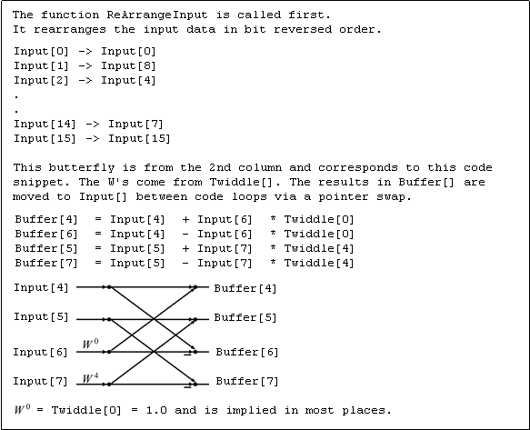

Iowa Hills Software Digital and Analog Filters
FFT
Flowchart Length 16 Decimation in Time Home
Generating FFT indexes can be tricky, but it helps to relate them to a flowchart.
We included a set of print outs in the FFT code that show the index values for a 16 pt FFT. They correspond directly to the flowchart below. This example shows a set of FFT equations and indexes and relates them to the appropriate butterfly.

The FFT C Code for the Butterfly Chart above.
Return to the FFT Page.
Return to the Iowa Hills Home Page
Other FFT Flowcharts can be found on the Rice University Connexions site.
Copyright 2013 Iowa Hills Software